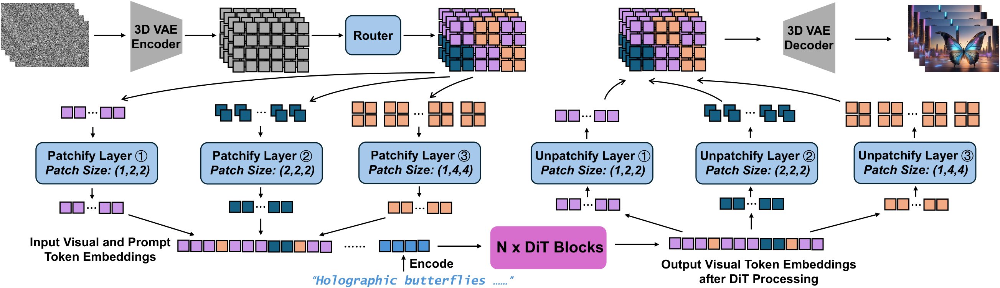
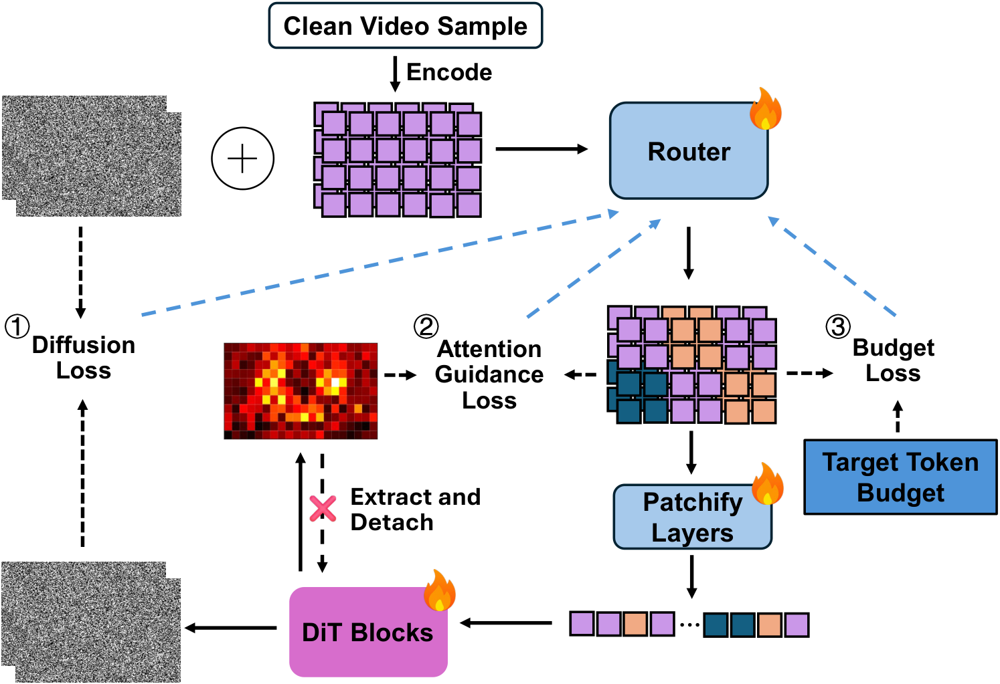
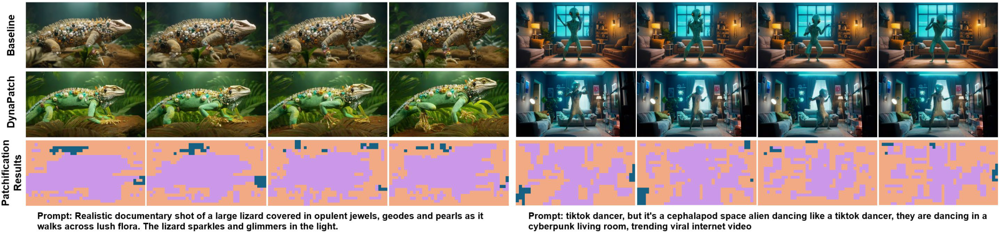

Prompt
A highly detailed portrait of a porcelain donkey being covered by thick slime. Cinematic, highly detailed, film grade.
* Work done while interning at Adobe.
Diffusion Transformers (DiTs) achieve strong video generation performance but suffer from prohibitive computation cost due to dense spatiotemporal tokenization. Most existing works rely on uniform patchification, tokenizing non-overlapping spatiotemporal regions with a fixed patch size regardless of the underlying content. This content-agnostic tokenization results in substantial redundant computation, especially in visually simple or static areas. To address this inefficiency while preserving video generation quality, we propose DynaPatch, a fine-grained dynamic patchification framework that adaptively selects patch sizes for each spatiotemporal region based on content complexity. A lightweight router predicts patch sizes directly from the latents encoded by a 3D Variational Autoencoder (VAE), and is jointly optimized with the diffusion model through diffusion loss, an attention-guided saliency alignment loss, and a token-budget regularizer. Learnable patchify and unpatchify layers integrate seamlessly with standard DiT backbones, allowing flexible tokenization without architectural changes. Experiments demonstrate that DynaPatch can effectively reduce redundant computations while preserving fine details, achieving 1.3-1.8x acceleration with minimal quality degradation.
This workflow preserves the original DiT backbone while allocating more computation to important or dynamic regions and fewer tokens to redundant areas.

Jointly trains the router with the DiT backbone so routing decisions remain compatible with high-quality denoising.
Aligns fine patch assignments with semantically important regions indicated by the model's attention maps.
Regularizes the routed token count toward a target compute budget instead of collapsing to all-fine patches.

| Token Reduction | Method | Total Score | Quality Score | Semantic Score | Speedup |
|---|---|---|---|---|---|
| 0% | Baseline | 83.61 | 84.87 | 78.59 | 1.0x |
| 20% | DynaPatch | 83.56 | 84.79 | 78.62 | 1.3x |
| 30% | DynaPatch | 83.42 | 84.68 | 78.36 | 1.5x |
| 40% | DynaPatch | 82.19 | 83.92 | 75.29 | 1.8x |
Comparison with baseline on VBench. DynaPatch maintains competitive scores while reducing tokens and improving inference speed.

Prompt
A highly detailed portrait of a porcelain donkey being covered by thick slime. Cinematic, highly detailed, film grade.
Prompt
A low angle hyper realistic shot of a thick purple goo flowing quickly down a white marble staircase. Cinematic, highly detailed, film grade.
Prompt
A cinematic documentary hand held close up of a woman standing in a busy Italian plaza smirking to herself, the background soft and out of focus, diffused overhead lighting. Her skin has freckles and small creases, her hair is down and a bit messy. Muted colors, diffused cinematic lighting, cool color grade.
Prompt
An ultra-fast first-person POV hyper-lapse rapidly speeding through a forest fire into a snow capped mountain.
Prompt
A rabbit made of liquid gold with a dark background, liquidify, cinematic, vfx.
Prompt
Mystical video of a cat dressed as astrologer performing colorful magic spells in front of an eager crowd of village mice, the mice watch in awe as the cat conjures sparkling constellations, floating orbs, and magical symbols in the air.